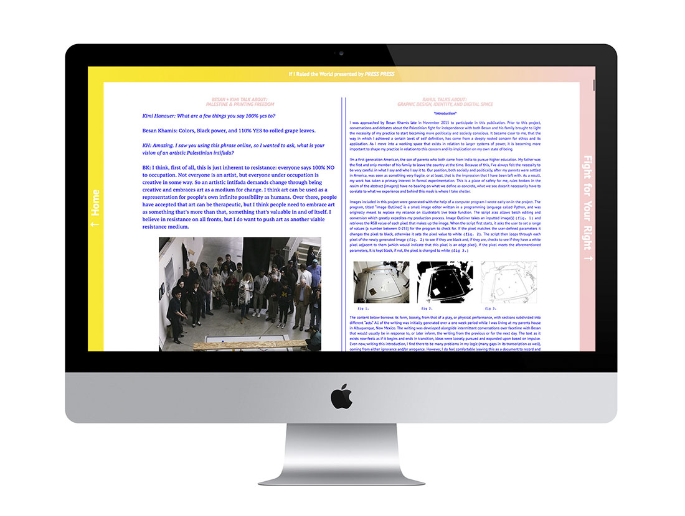

Writing
2016
1. Automation; [Application];
2016.06.09
Created in conversation with Besan Khamis, this piece of writing explores the power of automation, abstraction, poetry and humor as they relate to digital public space and Palestinian resistance.
The full text as well as an interview with Besan can be found here.
